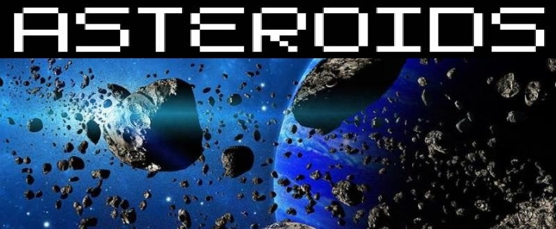

Projeto de Jogo para Navegador: Asteroids
Descrição:
Aprofundando meus conceitos em JavaScript, criei meu primeiro jogo, utilizando a linguagem de forma um pouco mais complexa. Nesse jogo você deve escolher um nivel de dificuldade antes de começar a jogar e atingir uma pontuação antes do término do tempo cronometrado, todas essas funções foram programadas utilizando o JavaScript de forma extensiva. É altamente recomendado que o jogo seja jogado através de dispositivos desktop ou notebooks em vez de smartphones, pois esse projeto foi feito especialmente para navegadores deste tipo. Clique no link abaixo para jogar.
Linguagens Utilizadas: Html, Css e JavaScript.
→ Clique Aqui para Jogar.← Voltar ao Portfólio